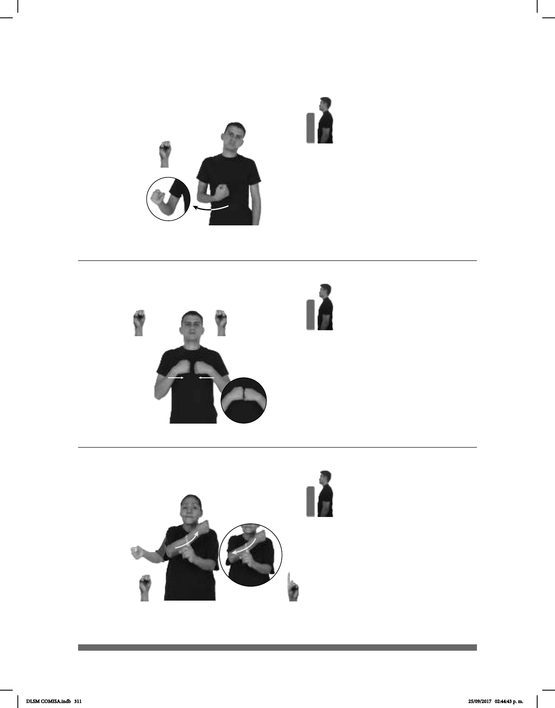

311
Seña: SM
S.1
La palma incia hacia dentro
y termina hacia afuera.
Del pecho a la altura.
Recto hacia el frente, el
antebrazo gira y cambia la orientación de
la mano, pasa de mostrar el dorso a
mostrar la palma.
1. adj. Que es conocido por
muchas personas, que tiene fama. 2.sust.
f. Opinión pública que se forma acerca de
una persona, de un grupo o de una
institución, por el carácter de sus obras,
por su valor, por su aspecto, etc.
Seña: SS
S.1
Palmas hacia adentro.
A la altura del pecho.
Las manos se
encuentran y se tocan frente a
frente.
sust. f. Límite de un
estado o línea que separa un estado
o un país de otro.
(S-52)
1
2
(S-53)
_____muy
HELADO DIFERENTE MICHOACAN pro-SUYO FAMOSO
Los helados de la Michoacana son muy famosos.
FRONTERA TIJUANA
derecha
pos-MÍ #TÍO VIVIR
allá
Mi tío vive en la frontera, enTijuana.
Seña: SB
MD S.1, MB 1.1
MD palma hacia la
izquierda, MB palma hacia la derecha.
MD y MB a la altura del
pecho.
MD recto hacia la
izquierda y hacia la derecha, por detrás
de MB.
Simula la acción de
golpear con el puño a una persona.
v. tr.Dar un golpe un cuer-
po sobre otro o chocar con él.
(S-54)
AYER HIJO pos-MÍ VECINO+MUJER pos-SUYO PERRO GOLPEAR
El hijo de mi vecina ayer golpeó a su perro.
DLSM COMISA.indb 311 25/09/2017 02:44:43 p. m.